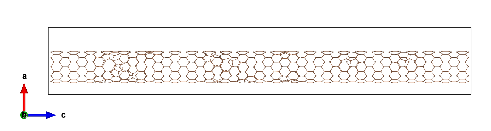

ABACUS 如何选择晶胞朝向获得最佳并行效率？以碳纳米管为例
作者：谢炘玥，邮箱：xyxie@stu.pku.edu.cn
审核：陈默涵，邮箱：mohanchen@pku.edu.cn
最后更新时间：2025/02/18
一、背景
不少用户会问当准备的 ABACUS 算例在 XYZ 三个方向的大小不一致时，摆放晶胞会不会对结果产生影响？如果会影响，应该怎么选取摆放的方向？相关的 Github Issue 有：https://github.com/deepmodeling/abacus-develop/issues/3015。为此，我们这里给了一个包含 1000 个碳原子的一维碳纳米管的测试。算例来自：https://github.com/MCresearch/TEAS/tree/main/2022-PRB-CNT/1_DHU/0.01。下面我们分别将真空方向设置为 X、Y、Z 方向，比较计算结果能量和时间来判断真空方向对计算的影响。
二、ABACUS 做不同真空方向计算的流程
本文算例的碳纳米管在一个方向的长度明显大于另外两个方向，我们会采用原子弛豫计算(ABACUS 中设置 calculation 为 relax，只让原子移动而固定晶格常数)。改变真空层的方向通过对 STRU 和 KPT 文件的三列进行轮换实现。我们先来看看为 ABACUS 计算准备的 INPUT 和 KPT 输入文件。
1. INPUT 文件
需要注意的是，上文给出的算例链接中的 INPUT 文件参数属于 ABACUS 老版本，下面已更新为 v3.8.0 的参数名称，输入参数关键词可以参考：Full List of INPUT Keywords #
INPUT_PARAMETERS
#Parameters (1.General)
suffix CNT_0.01
calculation relax
nbands 2100
symmetry 0
#Parameters (2.Iteration)
ecutwfc 100
scf_thr 1e-6
scf_nmax 400
#Parameters (3.Basis)
basis_type lcao
ks_solver genelpa
gamma_only 1
#Parameters (4.Smearing)
smearing_method gaussian
smearing_sigma 0.001
#Parameters (5.Mixing)
mixing_type pulay
mixing_beta 0.1
mixing_ndim 20
cal_force 1
cal_stress 1
relax_nmax 1000
force_thr_ev 0.04
#move_method cg
out_stru 1
2. KPT 文件
K_POINTS
0
Gamma
1 1 1 0 0 0
碳纳米管三个方向长度都较大，因此选择了 Gamma 点计算。
3. STRU 文件
一共有 1000 个 C 原子，STRU 文件较长所以不在此处展示，可以在 https://github.com/MCresearch/TEAS/blob/main/2022-PRB-CNT/1_DHU/0.01/STRU 中查看，结构如下图。

我们一起看看 STRU 文件中的 LATTICE_VECTORS，这是一个 3×3 矩阵，代表我们所计算体系在 X，Y，Z 三个方向上的晶格矢量大小，还要注意晶格矢量由 LATTICE_CONSTANT（晶格常数）进行缩放，此处晶格常数为 1 Bohr。可以参考：https://abacus.deepmodeling.com/en/latest/advanced/input_files/stru.html#lattice-vectors
LATTICE_CONSTANT
1
LATTICE_VECTORS
32.1253418058417 0.00000000000000 0.000000000000000
0.00000000000000 34.0150677944206 0.000000000000000
0.00000000000000 0.00000000000000 202.0428810989945
可以观察到此时位于矩阵(3,3)的元素值远大于(1,1)和(2,2)处的值，即此时长边在 Z 方向。我们要做的就是把长边分别放在不同的方向进行计算，比较效率。
放在 X 方向时：
LATTICE_CONSTANT
1
LATTICE_VECTORS
202.0428810989945 0.00000000000000 0.00000000000000
0.000000000000000 32.1253418058417 0.00000000000000
0.000000000000000 0.00000000000000 34.0150677944206
放在 Y 方向时：
LATTICE_CONSTANT
1
LATTICE_VECTORS
34.0150677944206 0.000000000000000 0.00000000000000
0.00000000000000 202.0428810989945 0.00000000000000
0.00000000000000 0.000000000000000 32.1253418058417
原子坐标的轮换也是相同的规则。
由于布里渊区的 K 点采样选择了 Gamma 点，故 KPT 文件轮换后结果不改变，测试中只轮换了 STRU 文件中的晶格矢量(LATTICE_VECTORS)和原子坐标(ATOMIC_POSITIONS)两部分来改变晶胞摆放。如果读者在做其他需要变换真空层方向的计算时，千万不要忘记当晶格矢量方向改变时，K 点也要改变！
三、测试结果
我们选择了 64 个型号为 8426Y+ 的 CPU 用 64 个进程对该一维碳纳米管结构进行结构弛豫。下表给出本次测试的总能量，将碳纳米管摆放在 XYZ 三个方向下做结构弛豫的步数都是 212 步。我们通过比较总能量和时间差异来判断真空层方向对计算结果的影响，可以看到系统总能量并不会受到不同碳纳米管取向的影响，但计算时间会受到显著影响。虽然，但是真空层摆放在 X 方向时，计算时间明显慢于摆放在 Z 方向，每一电子步大概慢 8s 左右。
| 碳纳米管长边朝向 | CPU 型号 | CPU 个数进程个数 | 系统总能量 (eV) | 计算总时间 (s) | 计算总弛豫步数 | 运行一电子步的时间 (s) | FFT | UNIFORM GRID DIM(BIG) |
|---|---|---|---|---|---|---|---|---|
| X | 8462Y+ | 64 核 64 进程 | -154919.0390601 | 64114 | 212 | 18~18.6 | 1296*216*225 | 324*54* 45 |
| Y | 8462Y+ | 64 核 64 进程 | -154919.0390599 | 56846 | 212 | 15.5~16 | 225*1296*216 | 45*324*54 |
| Z | 8462Y+ | 64 核 64 进程 | -154919.0390613 | 40630 | 212 | 10~10.5 | 216*225*1296 | 54*45*432 |
根据以上测试结果，建议读者们在进行真空层计算时，将碳纳米管的长边摆放在 Z 方向以获得 ABACUS 计算时的最大效率。